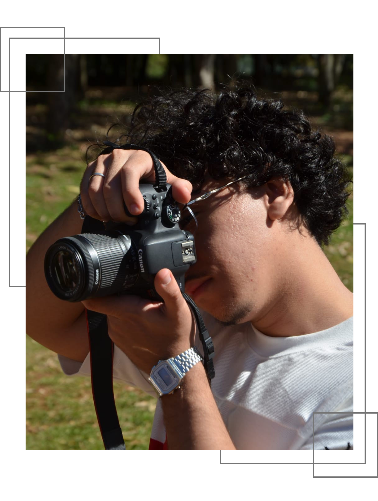
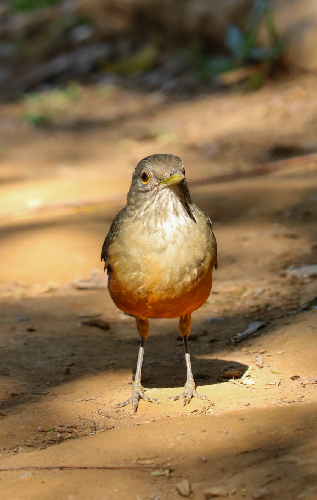
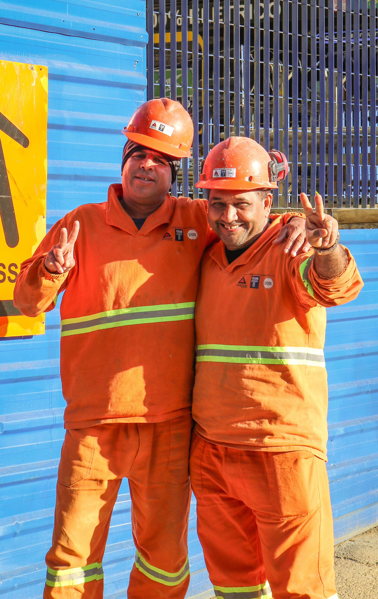
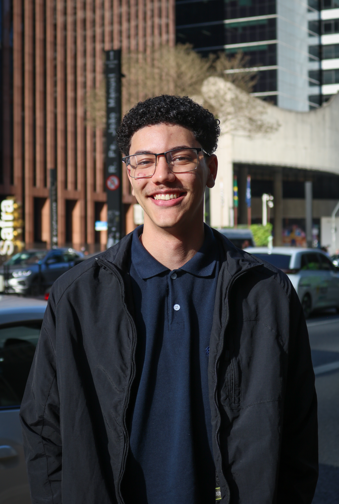
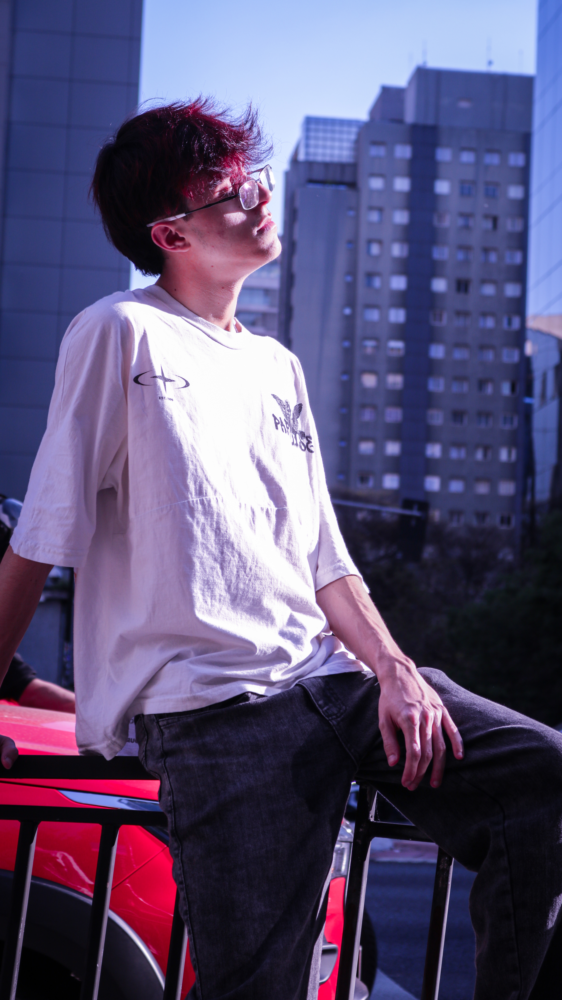
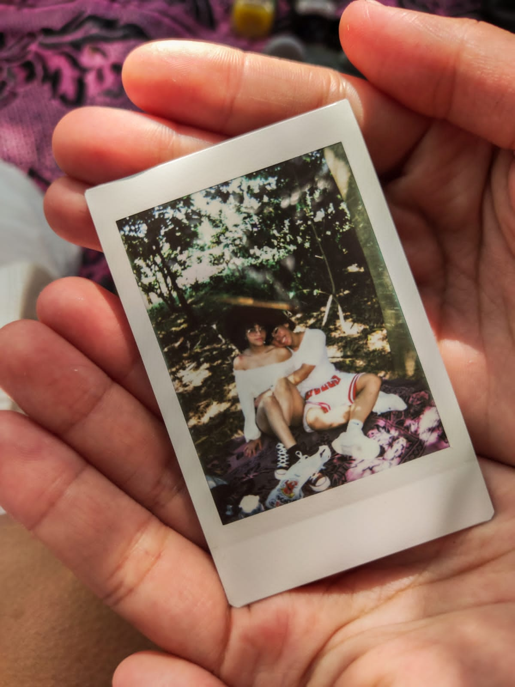

SOBRE O PROJETO
Criada por Ryan Leão, a Lenz nasce da paixão por eternizar sentimentos. Mais do que registrar imagens, nosso propósito é permitir que você more mais tempo nos momentos felizes e guarde toda a emoção que o tempo não pode apagar.

POR TRÁS DA LENTE
'Conheci o mundo da arte através da minha irmã e mãe, que sempre me incentivaram a ver filmes, ler livros, desenhar e desfrutar do melhor desse mundo artistico. Quando eu era criança, minha mãe tinha uma camêra fotografica simples, que possibilitou que nós registrassemos muitos momentos da minha infância. Sou muito grato à minha família por ter me apresentado esse universo que me possibilita poder revisitar o passado!'
Criador da Lenz

Nossos dias correm entre mensagens, trajetos e encontros inesperados. É um fluxo veloz e fascinante.
No meio dessa corrente existem fagulhas de beleza: um olhar, uma risada, uma luz atravessando a janela.
Já imaginou poder guardar os melhores momentos pra sempre?
Com uma fotografia você
pode!
Dois jeitos de contar o tempo: deixá-lo escorrer em luz ou
congelá-lo numa fração de segundo


Uma finta infinita de momentos que não pediram licença para acontecer.




